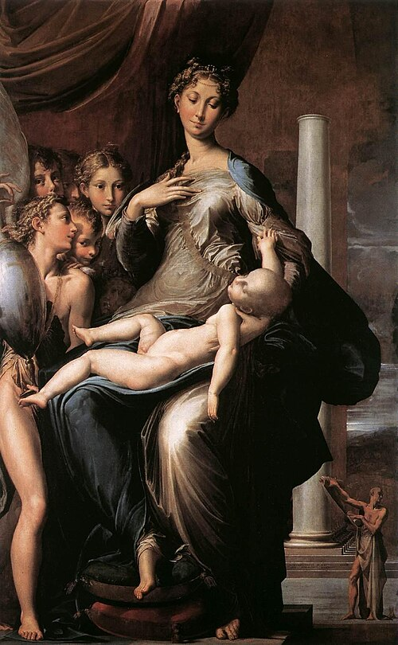

매너리즘 (Mannerism)

쉽게 풀면
르네상스의 완벽한 균형을 일부러 살짝 비틀고 늘려서, 더 극적이고 세련되게 보이려 한 스타일이다.
왜 중요한가
매너리즘은 1520년대 라파엘로 사후부터 16세기 말까지의 이탈리아 미술(폰토르모, 로소, 파르미자니노, 브론치노, 잠볼로냐)을 가리키는 양식 개념으로, 전성기 르네상스의 조화를 의도적으로 깨는 길게 늘인 인체, 불안정한 구성, 인공적 색채, 세련된 우아함(grazia)이 특징이다. 20세기 초 드보르작과 프리들렌더가 타락기로 취급되던 이 시기를 표현주의적 위기의 미술로 복권했고, 이후 셰어먼의 '양식적 양식' 해석, 하우저의 사회사적 해석이 대립하며 양식 개념의 성격 자체를 논하는 방법론적 사례가 되었다.
핵심 정리
매너리즘은 이탈리아 미술에서 대체로 1520년경부터 16세기 말까지 이어진 양식을 가리키는 미술사 개념이다. 이름은 ‘양식·솜씨’를 뜻하는 이탈리아어 maniera에서 왔다. 바사리(Vasari)는 이 말을 우아한 세련됨을 가리키는 칭찬의 뜻으로도 썼다.
양식적 특징은 보통 다음처럼 요약된다.
- 인체를 일부러 길게 늘이고 비틀어 우아함을 강조(‘뱀 같은 곡선’).
- 전성기 르네상스의 안정된 삼각 구도를 깨뜨린 불안정한 구성과 좁은 공간.
- 인공적이고 차가운 색채, 세련된 기교의 과시.
20세기 초까지 르네상스의 쇠퇴로 낮게 평가되다가, 드보르작(Dvořák, 1920년대)과 프리들렌더(Friedlaender, 1925) 등이 독자적 양식으로 재평가했고, 이후 시어먼(Shearman, 1967)은 ‘양식에 대한 자의식’으로, 하우저(Hauser, 1964)는 시대의 위기와 연결해 해석했다.
이탈리아에서는 대략 1530년 무렵 널리 퍼졌고 16세기 말 바로크 양식으로 대체되었지만, 북유럽 매너리즘은 17세기 초까지 이어졌다. 레오나르도, 라파엘로, 초기 미켈란젤로의 조화로운 이상에 영향을 받으면서 그것에 반응한 여러 접근을 아우르며, 비례·균형·이상미를 과장해 비대칭적이거나 부자연스럽게 우아한 구성을 낳았다. 문학과 음악에서도 화려한 문체와 지적 세련미를 가리켜 이 말을 쓴다.
시대 배경을 보태면, 전성기 르네상스 뒤의 화가들은 주요한 기법 문제가 해결되었다고 느껴 새 방향을 찾았고, 많이 모사된 미켈란젤로와 레오나르도–미켈란젤로의 경쟁에서 자극을 받았다. 1527년 로마 약탈 뒤 예술가들이 유럽 각지로 흩어지면서 고딕 이후 첫 국제 양식이 되었고, 프랑스의 퐁텐블로와 프라하 루돌프 2세의 궁정에 뿌리내렸다. 북유럽의 매너리즘은 17세기 초까지 이어졌다. 초기 매너리스트로는 폰토르모, 로소 피오렌티노, 파르미자니노, 줄리오 로마노가 꼽히고, 성숙기 양식(high maniera)에는 브론치노와 바사리가 속한다. 로마초(Lomazzo)는 1584년 논고에서 품위(데코룸)와 화가의 역할을 다뤘다.
예시로 보기
대표 작품을 개략 연도와 함께 정리했다(연도는 학자·자료마다 조금씩 다르다).
| 작가 · 작품 | 연도(경) | 눈에 띄는 점 |
|---|---|---|
| 폰토르모 〈십자가에서 내림〉 | 1525~1528 | 균형 잡힌 구도를 버리고 인물들이 떠다니는 듯한 파스텔 색채 |
| 로소 피오렌티노 〈십자가에서 내림〉 | 1521 | 각진 형태와 차가운 색, 긴장된 인물 배치 |
| 파르미자니노 〈목이 긴 성모〉 | 1530년대 중반~1540년경 | 성모와 아기의 비정상적으로 긴 신체와 비어 있는 오른쪽 공간 |
| 브론치노 〈비너스, 큐피드, 어리석음과 시간〉 | 1540년대 중반 | 대리석 같은 피부와 복잡한 알레고리 |
작품 설명에 쓰이는 ‘우아한 왜곡’은 서투름이 아니라 조화에서 의도적으로 벗어난 선택으로 해석된다.
자주 하는 오해
- “일상어 ‘매너리즘’(타성)과 같은 뜻이다.” 일상에서 쓰는 ‘매너리즘에 빠졌다’는 틀에 박힌 반복이라는 뜻으로, 양식 개념에서 파생된 비판적 용법이다. 미술사 논문에서는 구별해 써야 한다.
- “르네상스가 쇠퇴한 타락기다.” 낡은 평가이며, 오늘날에는 독자적 미학을 가진 양식으로 본다.
- “한 가지 정의가 있다.” 위기의 미술로 보는 해석(드보르작, 하우저)과 궁정의 세련된 취향으로 보는 해석(시어먼)이 맞서므로, 논문에서는 어느 입장에 서는지 밝혀야 한다.
- “이탈리아에만 있다.” 퐁텐블로파나 프라하 궁정 미술처럼 유럽 각지로 퍼졌다고 설명하며, 엘 그레코를 포함할지는 논쟁이 있다.
“안트베르펜 매너리스트도 같은 흐름이다.” 1500~1530년 무렵 북유럽에서 활동한 후기 고딕 화가들, 특히 안트베르펜 매너리스트에게도 이 이름이 붙지만 이탈리아의 운동과는 관계없는 별개의 집단이다. 라틴 문학의 ‘은의 시대’에 비유적으로 쓰는 경우도 있다.
논문에서는 이렇게 쓰입니다
실제 논문에서
이 용어를 직접 쓴 국내 논문 문장은 아직 모으지 못했다. 모이는 대로 출처와 함께 싣는다.
예시 문장
아래 예문은 용어의 쓰임을 보이려고 만든 것으로, 실제 논문 문장이 아니다.
매너리즘 화가들이 고전적 비례와 공간적 일관성을 의도적으로 왜곡하여 '마니에라', 즉 양식적 기교를 과시했다는 뜻이다.
대표적인 매너리즘 화가의 작품을 예로 들어 왜곡된 신체 비례가 만들어내는 독특한 미감을 설명한다.
조금 더 깊게 보면
매너리즘을 로마 약탈(1527)과 종교개혁의 불안을 반영한 '위기의 미술'로 보는 해석(드보르작, 하우저)과 궁정의 세련된 취향과 인공성(maniera)의 자의식적 추구로 보는 해석(셰어먼)은 정반대여서, 어느 쪽을 따르는지 명시해야 한다.
바사리는 '마니에라'를 긍정적 의미로 썼고 경멸적 용법은 17세기 벨로리 이후이다. 폰토르모의 종교적 불안과 브론치노의 궁정 초상을 하나의 양식으로 묶는 것 자체가 문제라는 비판도 있으며, 북유럽의 프라하·퐁텐블로 매너리즘은 별도 맥락이다.
주의할 점
'매너리즘'이 일상어에서 '타성에 젖음'이라는 부정적 뉘앙스로 쓰이지만, 미술사 용어로는 고도의 기교적 양식을 가리키는 중립적·전문적 개념이다.
헷갈리기 쉬운 용어
| 양식 | 시기(대략) | 구성과 분위기 |
|---|---|---|
| 전성기 르네상스 | 15세기 말~1520년경 | 균형·조화·안정된 삼각 구도 |
| 매너리즘 | 1520년경~16세기 말 | 왜곡된 비례, 불안정한 구성, 인공적 우아함 |
| 바로크 | 17세기 | 강한 명암과 역동적 움직임, 극적인 감정 |
시기는 학자마다 다르며 겹치는 구간이 있다.
참고 문헌
- Shearman, J. (1967). Mannerism. Penguin Books.
- Hauser, A. (1964). Der Manierismus: Die Krise der Renaissance und der Ursprung der modernen Kunst. C. H. Beck.
- Friedlaender, W. (1957). Mannerism and Anti-Mannerism in Italian Painting. Columbia University Press. (Original work published 1925)
- Vasari, G. (1568). Le vite de' più eccellenti pittori, scultori e architettori (2nd ed.). Giunti.
- Wikipedia. (n.d.). Mannerism. In Wikipedia, the free encyclopedia.
표의 기준값은 위 문헌에 따른 관례이고, 분야·학술지마다 기준이 다를 수 있다.